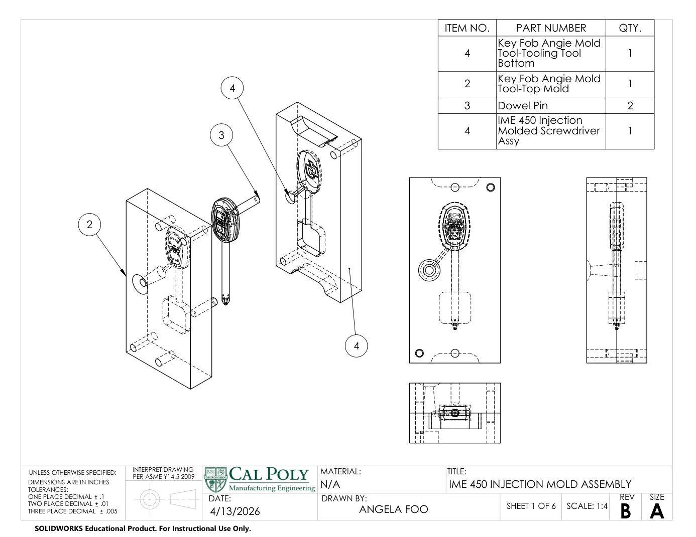
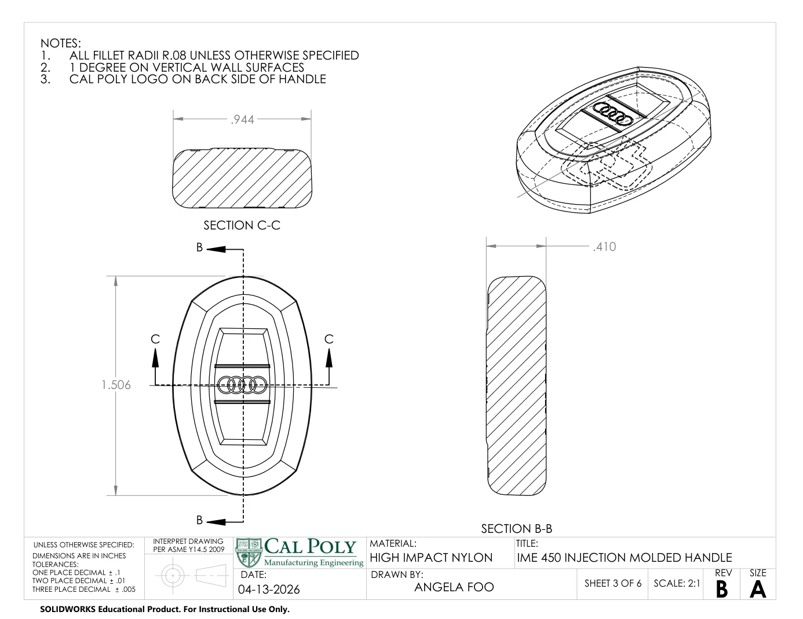
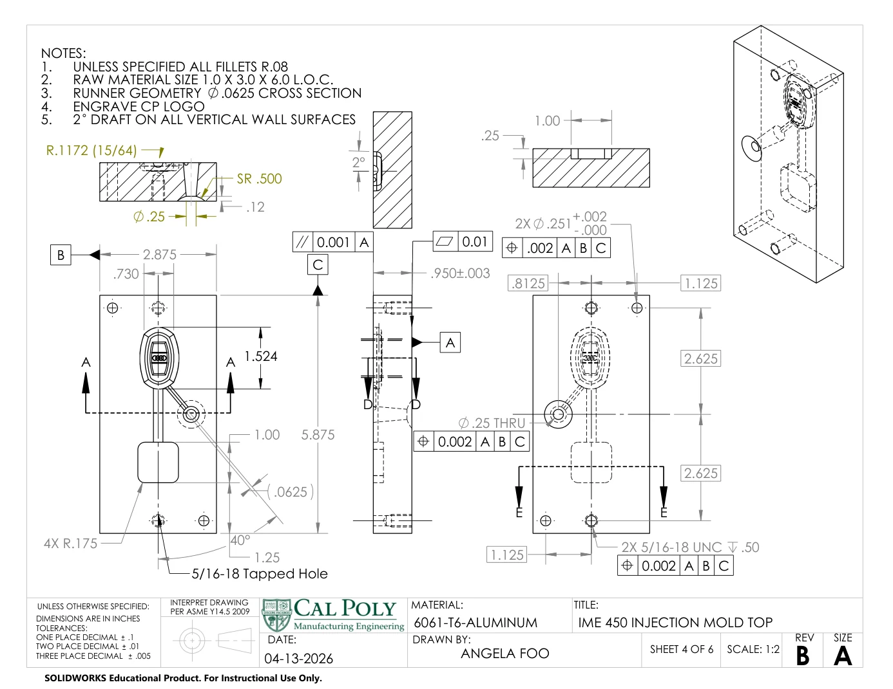
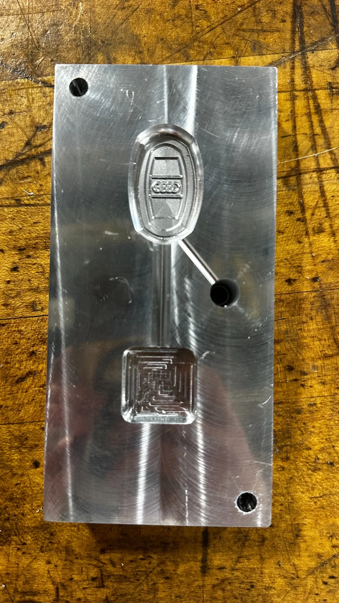

02 / IME 450 · INJECTION MOLD DESIGN · SPRING 2026
Injection-Molded
Screwdriver.
From a pocket-sized product concept to a machined aluminum mold and functional nylon prototypes.


Our two-person team designed and manufactured an injection-molded screwdriver handle, taking it from early CAD concepts through mold fabrication, molding trials, and production cost analysis.
The objective was to create a small, ergonomic handle around a standard Phillips screwdriver blade while meeting the limits of the Morgan G100T injection molding press. We selected a rounded, key-fob-inspired profile to balance portability, grip, and manufacturability.
More than a part-design exercise, the project required the handle, its mold tooling, CNC manufacturing plan, and production process to work together.
Black high-impact nylon
Aluminum machined on Haas VF-2
On mold-cavity walls for part release
Allowance applied to cavity design
The assignment also specified a maximum 5-inch overall screwdriver length, a standard Wera Phillips blade with at least 1 inch overmolded, and mounting/alignment features for the Morgan G100T press.
03 / PRODUCT & TOOLING DESIGN
Designed for molding.
Engineered for machining.
The handle was developed through several SolidWorks iterations, considering different shapes before selecting a rounded rectangular form. Drafted walls, generous radii, and controlled geometry were incorporated to support reliable filling and release.
For the two-piece mold, we planned a parting line, pin alignment, toe-clamp clearances, press mounting, nozzle entry, a runner system, and a seat for the screwdriver blade. The runner entry location was chosen to shift potential knit lines away from a more critical region of the handle.
The drawing package documents the design, including the mold assembly, individual aluminum mold halves, handle geometry, and standard components.
View engineering drawing package


04 / CNC MACHINING
Making the tool.
Establish the setup. Defined G54 from the center of each mold block with Z-zero at the bottom face and used probing for repeatable positioning.
Generate & verify toolpaths. Adapted HSMWorks toolpaths to the cavity geometry, including scallop finishing, and simulated operations before posting G-code.
Machine & assemble. Machined the top and bottom 6061-T6 mold halves on the Haas VF-2, inspected the tooling, and installed alignment dowel pins.



05 / INJECTION MOLDING
Dialing in the process.
After machining, we aligned the two mold halves in the Morgan G100T press and secured them using the dowel pins, mounting points, and toe clamps.
Early shots showed short fills, shrinkage, and excess flash. Adjusting the injection conditions and material heating helped produce acceptable parts with visible molded detail and without excessive flashing or shrinkage.
Our report recorded an approximately 3-minute cycle time, including blade loading and periodic replenishment of the material hopper.
Reported trial setting
Reported trial setting
Observed cycle time per part
Cost model for a 12,000-unit production run
The $11.19 figure is a projected cost, not the measured cost of a completed 12,000-unit production run. The course brief specified 10,000 units/year, while our final report modeled costs using 12,000 units.
07 / TROUBLESHOOTING
When the part
didn't match CAD.
The first prototypes revealed a critical width mismatch: 0.915 in measured against a 0.944 in target.
We traced the 0.029-inch difference to mold stock that was shorter than the programmed stock height. Because the probing routine did not establish the Z-height of the blank, the cavity roughing cuts did not reach the intended depth. The blade-core seat was also too shallow for proper mold closure.
We reran the affected blade-pocket toolpaths to correct the interference and completed functional molded prototypes. The final parts were acceptable, but the width remained smaller than originally designed.
This reinforced a practical lesson in stock verification and datum strategy: accurate CAD and CAM are only as reliable as the workholding setup and the actual dimensions of the blank.
08 / REFLECTION
From design intent
to a working part.
The project brought together product design, tolerance planning, CNC tooling, press setup, molding trials, and cost analysis in a single workflow. The resulting prototypes validated the overall concept while revealing opportunities to improve dimensional control, ergonomics, and cycle time.
Academic team project by Angela Foo and Brynn Bajema, Cal Poly IME 450. Figures and photos are from the team project and Angela's uploaded drawing package.
More engineering projects